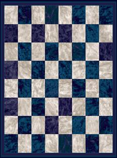
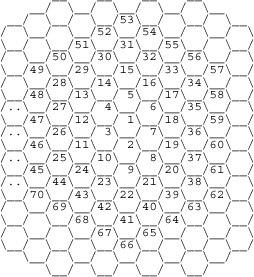

|
Problem G |
Knight on the Bee Board |
|
Time Limit |
3 Seconds |
The bee board consists of many hexagons instead of square of a chessboard. The other difference is chessboard has only 64 squares. But the bee board may have as many as 10000 hexagons. The main thing is choosing an arbitrary hexagon as number 1 hexagon of the board. And other hexagons are numbered sequentially clockwise direction. A knight acts as a regular knight that used in chess game but it can move 12 different directions. For example from cell number 1 the knight can move to cell number 20, 21, 23, 24, 26, 27, 29, 30, 32, 33, 35 and 36.
 
General chessboard
Bee board
Input
The input consists of several test cases. The first line of every test case consists of two integers N ≤ 10000 and M ≤ N. N indicates the number of cells in bee board. M indicates the number of obstacles. The next M lines contain the cell number that contains the obstacle. The knight cannot move to this cell. The last line of the input case contains two integers the source and destination of the knight. A blank line will follow each test case. You must read until EOF.
Output
For each test case output a line consists of an integer that indicate the minimum step to reach from source to destination if it is possible to reach source to destination otherwise print “Impossible.”
|
Sample Input |
Output for Sample Input |
|
70 2 5 1 14 2 70 2 5 1 14 2 |
1 1 |
Problemsetter:
International Islamic
University
Special thanks to Md. Kamruzzaman